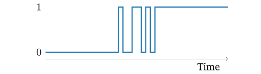

Keyboard FAQs
Pascal Getreuer, 2022-05-15 (updated 2024-02-01)
- Meta: How to ask for help
- Keyboard shopping tips
- How long to get used to a split columnar keyboard?
- Should I use a wrist rest?
- Should I learn how to touch type?
- I type XXX wpm – Is that fast?
- Pressing a key sometimes types it twice
- How much lag do custom keyboards have?
- Home row mods are hard to use
- Firmware is too large!
- MT doesn’t work with this keycode (QMK)
- How to type non-English letters (QMK)
- Some keys are swapped (QMK)
- SEND_STRING doesn’t work (QMK)
- What is this weird C syntax (QMK)
Certain topics come up pretty regularly on r/olkb, so I‚Äôve collected some thoughts here. Each section includes a section link üîó for easy sharing.
If you don’t find what you are looking for here, try also the Keymap FAQ in the QMK documentation and Links about keyboards.
Meta: How to ask for help
r/olkb and r/ErgoMechKeyboards are great places to ask for keyboard troubleshooting help. Here are some suggestions to make it easier for others to help you:
To avoid misunderstandings, clearly distinguish what you want to happen vs. what actually happens. Or alternatively, what is your goal vs. what is the problem.
Be specific about what steps produce the problem, say, a certain sequence of button presses, and describe the problematic behavior that results from this.
When troubleshooting keymap code, share the relevant part of the code. If possible, share a link to the full code as well. An easy way to do this is as a GitHub Gist.
Good luck!
Keyboard shopping tips
For typing comfort, I highly recommend a keyboard that is split, columnar, and with QMK or other programmable firmware. Here is a tour of what makes these keyboards so good. An example is the ZSA Moonlander keyboard. Some other popular examples are the Lily58, Sofle, and Corne split keyboards.
The r/ErgoMechKeyboards wiki has a list of vendors that sell split and ergonomic keyboards, organized by region. For yet more options there is an extensive vendor list in Keyboard Builders’ Digest. You can also try r/mechmarket.
A few notes to give fair warning…
These keyboards are not exactly cheap, in the ballpark of $250 USD. This is an investment in your comfort.
Custom keyboards are often sold as kits that you assemble yourself. If you don’t want to do that, look for prebuilt keyboards or vendors with a build service to assemble a kit for you.
Typing on a split columnar keyboard takes some time to adjust, around a couple weeks for many people.
How long to get used to a split columnar keyboard?
It took me a couple weeks of use to adapt to typing on a split columnar keyboard. Others have reported similar experience. My first such keyboard was a Dactyl Ergodox, which in addition to being split and columnar has concave key wells.

I was fumbling at first. It took practice and patience to develop the
right muscle memory. Additionally, if there are non-standard quirks to
your typing habits, you might need to correct for that. I initially
wanted to type the key in Y QWERTY position with my left
hand, but on a split keyboard that cross-hand jump becomes a big
one!
But it’s definitely worth it. A columnar split keyboard makes it easier to keep wrists straight while typing with hands at a relaxed shoulder width apart. It’s the most effective change I’ve made for my typing comfort.
Should I use a wrist rest?
Wrist rests are not necessary for good ergonomics. I don’t use them myself. If anything, a wrist rest should support the heel or palm of the hand, not the wrists. Pressure on the soft area of the wrist puts pressure on the tendons and nerves.
From Ergonomic Usage of Wrist Rests and Palm Supports:
In the vast majority of cases, wrist rests do not provide any significant ergonomic benefit and in fact will usually increase the number of risk factors for injury in your computer workstation. The reason is that if you ‘rest’ your ‘wrist’ on any type of support, be it foam, gel, webbing, cloth, etc. you are applying pressure to the underside of your wrist which will compress the tissues, resulting in decreased blood flow. More specifically, you can compress the carpal tunnel and possibly pinch the median nerve, which can lead not only to long term injury, but short term symptoms such as tingling, numbness or coldness in the hands, and finger muscles which fatigue quicker due to reduced circulation.
Potential Hazards
- Performing keying tasks without a wrist rest may increase the angle to which users’ wrists are bent. Increasing the angle of bend increases the contact stress and irritation on tendons and tendon sheathes. This is especially true with high repetition or prolonged keying tasks. Keying without a wrist rest can also increase contact stress between the users wrist and hard or sharp workstation components.
- Resting the wrist/palm on a support while typing may inhibit motion of the wrist and could increase awkward wrist postures.
Possible Solutions
- Your hands should move freely and be elevated above the wrist/palm rest while typing. When resting, the pad should contact the heel or palm of your hand, not your wrist.
- If used, wrist/palm rests should be part of an ergonomically-coordinated computer workstation.
- Reduce bending of the wrists by adjusting other workstation components (chair, desk, keyboard) so the wrist can maintain an in-line, neutral posture.
- Match the wrist support to the width, height, and slope of the front edge of the keyboard (keeping in mind that the goal is to keep wrist postures as straight as possible).
- Provide wrist/palm supports that are fairly soft and rounded to minimize pressure on the wrist. The support should be at least 1.5 inches (3.8 cm) deep.
Related reading:
Ask a Medic: Should I use a wrist rest with my keyboard and mouse?
Truth vs. Myth: Do wrist rests prevent carpal tunnel syndrome?
Should I learn how to touch type?
Do you want better speed, accuracy, and typing comfort? Then the answer is yes. Learning proper touch typing technique helps all of that.
Touch typing is a style of typing. The eight fingers are placed along the home row, and each finger has designated keys that it can reach. This systematic method lets you type each key with little motion and by sense of touch alone, enabling you to type faster and more efficiently. Additionally, it reduces neck strain and improves posture by keeping your eyes on the screen, not constantly glancing at the keyboard to find the keys.
Resources to learn touch typing:
Related reading:
- Gary Internet’s Typing Guide
- How To Type Faster: 8 Actionable Tips To Increase Your Typing Speed
- Touch Typing: how long does it take to reach 100 WPM?
I type XXX wpm – Is that fast?
How fast is “fast”? The typing site onlinetyping.org published distributions of typing speed, based on tests on their site. By this data, if you can type over 70 words per minute (wpm), you are faster than about 95% of people. But see also the caveats below.
Some people can type well over 100 wpm. A few can type over 200 wpm. If you include stenography, some fast stenotypists can type over 300 wpm.
Want to type faster?—see the resources for Should I learn how to touch type?
Caveats:
A lot of factors influence typing speed. Some big ones:
- Duration: Like running a race, it’s a different thing to sprint type a single sentence vs. marathon type nonstop for multiple minutes.
- Vocabulary: You tend to be faster on words that you
type more often. Typing top-100 English words like
“
they were not there” is easier than general English words like “exotic delicatessen.” - Accuracy: Some typing tests tolerate a rate of typos, and you might type faster if you allow more typos. But obviously both fast and accurate is desirable.
Sources:
Pressing a key sometimes types it twice
When you press a key once, does it sometimes type twice (or more)? A common cause is contact bounce (or chatter) in the key switch. Electrical contacts are usually springy material. When the switch is pressed, the contacts bounce, making and breaking contact for some milliseconds before settling to a steady contact. So rather than a clean 0 to 1 transition, the raw digital reading bounces between 0 and 1.

A similar bouncing problem occurs in the other direction when the key
is released. The settling time depends on the kind of switch and may be
different for press vs. release. Additionally, the settling time tends
to increase as the switch is worn from use. Some keys are pressed more
frequently than others (extreme example: E key vs. the
[ key), so switches wear down at different rates. This can
explain observing bouncing on some keys but not others, especially if
you reused some switches.
Diagnosis: Go to the QMK Configurator test page and press each key (this works also for non-QMK keyboards). If any key events appear suspiciously fast, a message appears “CHATTER HAS BEEN DETECTED” and the key is highlighted red.
Software troubleshooting: It’s typical to apply filtering algorithms in software to “debounce” the button. (See the Related reading below for several algorithms.)
For QMK firmware: see the QMK debounce documentation. By default, QMK applies debouncing with a debounce time of 5 ms. Try increasing the debounce time to, say, 10 ms by adding in config.h:
#define DEBOUNCE 10For Oryx: in the Oryx configurator, click the gear ⚙️ in the upper right corner to open advanced settings, then click Debounce.
For ZMK firmware: see the ZMK debounce documentation. ZMK applies debouncing by default with a debounce time of 5 ms. Try increasing this to 10 ms by setting in your .conf file:
CONFIG_ZMK_KSCAN_DEBOUNCE_PRESS_MS=10 CONFIG_ZMK_KSCAN_DEBOUNCE_RELEASE_MS=10For KMK firmware: the debounce time is set by the
intervalarg in the constructor ofMatrixScanner(or similar key scanner), defaulting to 20 ms. See the Scanners documentation.
Hardware troubleshooting:
- Try replacing the switch. If your keyboard is hot-swappable, this is easy to do with a switch puller—see for instance ZSA: Change your own keyswitches.
- Check the connections on the wire matrices and the board itself.
- Try resoldering the microcontroller pins.
Related reading:
A Guide to Debouncing – measures bouncing on several real switches, discusses several debouncing strategies in hardware and software
Embed with Elliot: Debounce your noisy buttons, Part 2 – a sophisticated debouncing algorithm
Measure and reduce keyboard input latency with QMK – tuning debouncing and other configurations for minimal latency
How much lag do custom keyboards have?
And related question, are custom keyboards good for gaming? I’ll focus on keyboards running QMK firmware, but this is probably representative in general since other keyboard firmwares work similarly under the same constraints.
Input lag of a keyboard is the time between actuating a key to the computer receiving the keyboard report. Input lag with QMK is typically 2–14 ms, so fast that it is visually imperceptible, less than one frame of 60 fps video (16.7 ms). QMK keeps up even with the most demanding games. Lag due to keyboard firmware is probably negligible compared to other sources of lag (more on this below).
The following processes are the main sources of lag. See Michael Stapelberg’s investigation for deeper discussion:
Matrix scanning continually checks the keyboard’s matrix circuit for changes in key state. The time between successive scans in on the order of 0.2–2 ms. A faster keyboard microcontroller can improve this.
Debouncing is applied to clean up the matrix changes. As a key is pressed, the electrical contacts typically make and breaking contact several times. By default, QMK debounces the signal by waiting for a debounce time of 5 ms, while some keyboards are configured for a longer debounce time. Setting an “eager” debouncing strategy avoids this latency. You can also try reducing the debounce time, though beware that keys might bounce if the time is too short.
USB polling transfers key reports to the computer. Polling defaults to once every 1 ms, the fastest interval supported by USB Full Speed (USB 1.0).
Beware that input lag is much larger on keys using certain
special QMK features, namely Tap-Hold keys, Tap Dance keys,
Auto Shifted keys, Space Cadet keys, and keys used in Combos. Avoid
using them on your gaming layer. Event processing for keys using these
features is delayed while QMK waits to determine whether the key is
being tapped vs. held or whether other keys are pressed at the same
time. This delay may be substantial, up to TAPPING_TERM or
200 ms by default for tap-hold keys or COMBO_TERM or 40 ms
by default for keys used in combos.
Other sources of lag:
Wireless keyboards have additional lag compared to wired. Communication over Bluetooth adds around 8–25 ms of lag. Some keyboards have the option to communicate instead using a proprietary wireless protocol and receiver, which can slim communication lag below 4 ms. For minimal lag, use a wired connection.
Switch pretravel and actuation force make a difference, that is, how far down and with how much force the key must be pressed to register. Pretravel of 2 mm and actuation force of around 50 gf is typical. There are switches that reduce these parameters, like Kailh Speed Silver and Cherry MX Speed Silver.
Display lag of the monitor contributes to the full time between keystroke to its effect being visible on screen. LCD monitors vary, sometimes having in excess of 30 ms display lag (2 or more frames delayed). A gaming monitor with refresh rate of 120 Hz and up can improve this.
Related reading:
Home row mods are hard to use
It’s not just you. Home row mods are tricky for most people. Configuration is critical, and on top of that it takes time to get used to it.
Home row mods are nontrivial to use reliably because of accidental
mod triggers during fast typing. You might think of normal typing as
pressing and releasing one key at a time like “T down,
T up, H down, H up.” But fast
typing is often sloppier than this like “T down,
H down, T up, H up,” especially
in “rolled” sequences of adjacent keys like io or
ast in QWERTY. There’s also the complementary problem of
failing to trigger a mod when it was intended.
If you haven’t already, read Precondition’s guide to home row mods. It explains a bunch of tap-hold configurations and variations to mitigate these problems.
Suggested settings:
For QMK firmware, I suggest starting with these settings in config.h:
#define TAPPING_TERM 200 #define PERMISSIVE_HOLDSee also my Achordion library, which prevents mods from firing on same-hand combinations of keys.
For ZMK firmware, see the suggested configurations for home row mods.
In addition to good configuration, I suggest you may need a couple months to get used to home row mods. Everyone’s typing habits are a little different. I struggled badly when I started with accidental mod triggers, despite using Precondition’s recommended settings. But after a couple months of persistence, my typing adapted. Now I use home row mods with confidence.
Other tips:
Repeat a mod-tap key: A little known feature! If you quickly tap and then hold the key, its tap action is repeated. In QMK, this is enabled by default and disabled by setting QUICK_TAP_TERM to zero. In ZMK, it is enabled with quick-tap-ms.
Or instead of tap-holding, use a repeat key (Repeat key in QMK, Repeat key in ZMK).
ALL_CAPS typing: Typing in all-caps is awkward with home row Shifts. Use a Caps Word implementation to get around this: Caps Word in QMK, Caps Word in ZMK. Caps Word is like the standard Caps Lock, but turns off automatically at the end of the word. This is useful for typing abbreviations like “QMK” and all-caps identifiers in code like “
KC_LSFT.”Sentence capitalization: You may find Sentence Case useful as another way to avoid Shift, which automatically detects and capitalizes the first letter of sentences. Or for an explicit approach, consider a macro that types period, space, and sets a one-shot Shift mod to capitalize the next letter (QMK implementation).
One-shot home row mods: You may find it helpful to make some or all of your home row mods behave like one-shot mods. Thanks to @rafaelromao for this idea. An implementation in QMK is described below.
Alternatives: If home row mods are not for you, here are several alternative approaches to modifiers that you might consider.
Bottom row mods: move the mod-taps down to Z X C V and M , . / QWERTY positions on the row below home row. The bottom row keys tend to be used a lot less than the home row, making accidental mod triggers less of a problem. Several other variations are suggested in Precondition’s guide.
Callum Oakley’s mods (callum-style mods) are sticky (one-shot) mods on the home row of a separate layer. No timers are involved so that mod keys can be tapped as fast as you like. A similar idea is in SteveP’s Seniply keymap, with sticky mods on the Extend layer, inspired by the use of mods in DreymaR’s original Extend layer.
Space Cadet Shift makes the Shift mods dual-role keys, typing
(and)when tapped quickly. QMK’s Space Cadet feature elaborates this idea to the Ctrl and Alt keys.With QMK’s Auto Shift, long-pressing a key types the shifted version of the key. For ZMK, see the Autoshift example in the Hold-Tap use-cases for similar behavior.
Firmware is too large!
A build error like “firmware is too large! X bytes over”
means the compiled firmware is too large to fit
in the microcontroller’s
programmable flash memory. This is easily a problem on microcontrollers
with less than 32KB flash space.
This suggestion may come too late, but when building a keyboard, it’s worth using a microcontroller with larger flash space to avoid this problem in the first place. Some QMK-compatible options with more space are Proton C (STM32F303xC) with 256KB flash, WeAct Blackpill (STM32F411) with 512KB flash, and Nice Nano (nRF52840) with 1MB flash. See also QMK Compatible Microcontrollers and ZMK Supported Hardware.
Otherwise, you need to reduce the firmware size. The main contributors to firmware size are enabled features. By “feature,” I mean a behavior that can be independently enabled, like Mouse Keys and Space Cadet Shift in QMK. Each enabled feature adds around 1000–4000 bytes, depending on what it is. So a good way to reduce firmware size is to cull unused and non-essential features.
Specific to QMK: Make sure to enable LTO (link-time optimization) in rules.mk:
LTO_ENABLE = yesFirmware will take longer to build, but the result will be smaller. See Squeezing the most out of AVR (applicable also with non-AVR MCUs) for further tips.
MT doesn’t work with this keycode (QMK)
With mod-tap keys
MT(mod, kc) and layer-tap keys
LT(layer, kc), a limitation is that the tapping keycode
kc must be a basic keycode, a keycode
in the 0–255 range. All keycodes in QMK are 16 bits, so in order to pack
identifiers, the mod or layer, and kc in that space, the
kc portion is limited to 8 bits. As described in the Caveats
section:
Currently, the
kcargument ofMT()is limited to the Basic Keycode set, meaning you can’t use keycodes likeLCTL(),KC_TILD, or anything greater than0xFF. This is because QMK uses 16-bit keycodes, of which 3 bits are used for the function identifier, 1 bit for selecting right or left mods, and 4 bits to tell which mods are used, leaving only 8 bits for the keycode.
Shifted keycodes like KC_QUES (= Shift +
/) and user-defined keycodes are not basic keycodes, so
attempting “LT(layer, KC_QUES)” or
“LSFT_T(MYMACRO)” is unsupported. Fortunately, there is a
workaround.
MT with a non-basic tapping key
First, pick a basic
keycode like KC_0 as a placeholder for the tapping
keycode kc. This keycode will never be sent, so any
arbitrary basic keycode will do. Then change the tap
function to behave as desired.
In keymap.c:
// Copyright 2023 Google LLC.
// SPDX-License-Identifier: Apache-2.0
// Define named constants for our customized tap-hold keys.
#define NAV_QUES LT(NAV, KC_0)
#define SFT_MYMACRO LSFT_T(KC_1)
// Use `NAV_QUES` and `SFT_MYMACRO` in your layout...
bool process_record_user(uint16_t keycode, keyrecord_t* record) {
switch (keycode) {
case NAV_QUES: // NAV layer on hold, KC_QUES on tap.
if (record->tap.count) { // On tap.
if (record->event.pressed) { // On press.
tap_code16(KC_QUES);
}
return false; // Skip default handling.
}
break;
case SFT_MYMACRO: // LSFT on hold, MYMACRO on tap.
if (record->tap.count) { // On tap.
// Your macro here...
if (record->event.pressed) {
SEND_STRING("keyboards!");
}
return false; // Skip default handling.
}
break;
// Other macros...
}
return true; // Continue default handling.
}One-shot mod-tap OSM + MT
Attempting a one-shot mod-tap as keycode
“MT(OSM(mod), kc)” is unsupported, but can be done through
changing
the hold function. Here is an example in which the D
and K keys are one-shot Shift mods when held.
// Copyright 2022-2023 Google LLC.
// SPDX-License-Identifier: Apache-2.0
// Replaces mod-tap key's hold function with its one-shot counterpart.
static bool oneshot_mod_tap(uint16_t keycode, keyrecord_t* record) {
if (record->tap.count == 0) { // Key is being held.
if (record->event.pressed) {
const uint8_t mods = QK_MOD_TAP_GET_MODS(keycode);
add_oneshot_mods(((mods & 0x10) == 0) ? mods : (mods << 4));
}
return false; // Skip default handling.
}
return true; // Continue default handling.
}
bool process_record_user(uint16_t keycode, keyrecord_t* record) {
switch (keycode) {
case LSFT_T(KC_D):
case RSFT_T(KC_K):
return oneshot_mod_tap(keycode, record);
}
return true;
}See also rafaelromao’s keymap, which implements one-shot mod-tap keys.
Layer-mod-tap LM + LT
QMK has a layer-mod LM(layer, mod) key that changes
layers with a mod held. There is no predefined keycode that performs as
LM on hold and some other key on tap, but such behavior is
possible, again, through changing the
hold function.
In this example, SFT_NUM_DEL is a key where the hold
function is to switch to the NUM layer with left Shift
applied, and the tap function is KC_DEL.
// Copyright 2024 Google LLC.
// SPDX-License-Identifier: Apache-2.0
// Define named constant for our customized tap-hold key.
#define SFT_NUM_DEL LT(NUM, KC_DEL)
// Use `SFT_NUM_DEL` in your layout...
bool process_record_user(uint16_t keycode, keyrecord_t* record) {
switch (keycode) {
// Switch to the NUM layer with LSFT applied on hold, KC_DEL on tap.
case SFT_NUM_DEL:
if (record->tap.count == 0) { // On hold.
if (record->event.pressed) { // On press.
register_mod(MOD_BIT(KC_LSFT)); // Hold left Shift.
} else { // On release.
unregister_mod(MOD_BIT(KC_LSFT)); // Release left Shift.
}
}
// Continue default handling, which switches to NUM on hold and
// performs KC_DEL when tapped.
return true;
// Other macros...
}
return true; // Continue default handling.
}How to type non-English letters (QMK)
There is a good solution for typing most symbols in major Western European languages by using the US-International layout. For other symbols, a possibility is QMK’s Unicode input feature. See Typing non-English letters.
Some keys are swapped (QMK)
Magic keys: Magic keys and a related Command feature are capable of dynamically disabling GUI keys, swapping Ctrl ↔︎ Caps Lock, Alt ↔︎ GUI, and a few other similar such things. A common source of confusion is when these settings are changed unintentionally. Furthermore, magic settings are saved to EEPROM, so they stubbornly survive even when the keyboard is flashed with new firmware. The way to fix this is to clear the EEPROM, which resets any magic settings. Two ways to do that:
Hold down the Space and Backspace keys while plugging in the keyboard.
Use the key code
EE_CLRin your layout. Pressing this key will clear the EEPROM.
See also Some Of My Keys Are Swapped Or Not Working.
Non-US QWERTY host layout. The usual
“KC_”-prefixed keycodes assume the host computer is
configured to US QWERTY keyboard layout, see What
Are the Default Keycodes. Configuring the computer to a different
layout can result in swapped keys or some shifted keys producing
unexpected results. See Using non-US
layouts.
SEND_STRING doesn’t work (QMK)
There are some gotchas with SEND_STRING():
String literals in C are defined by surrounding a sequence of characters with double quotes. Most characters are written directly. But backslash
\has special meaning, for instance\nfor new line. If you want a string with the literal\character, it must be escaped as\\. Say, a Windows directory pathSEND_STRING("my\favorite\directory"); // DON'T DO THIS!should instead be written as
SEND_STRING("my\\favorite\\directory"); // OKSimilarly,
"characters have special meaning, since they mark the beginning and end of the string. For a string with the literal"character, escape it as\". See also Escape sequences in C.By default,
SEND_STRINGassumes the host computer is set to US QWERTY keyboard layout. If not, see Using non-US layouts.SEND_STRINGis limited to (a subset of) ASCII text. To send a string of Unicode characters, usesend_unicode_string()as in this example.SEND_STRING’s argument must be a string literal. To print a string that you generated, use lowercasesend_string()instead:// Print the index of the highest layer. const char* str = get_u8_str(get_highest_layer(layer_state), ' '); send_string(str);
What is this weird C syntax (QMK)
QMK code is embedded code written in C11, the 2011 standard of the C programming language, with nonstandard GNU extensions. You may run into some unfamiliar syntax even if you are otherwise well-versed in C/C++:
PROGMEM is a variable modifier used in embedded code to store data in flash memory, aka program memory or “progmem,” instead of SRAM. Often, microcontrollers have more flash memory than SRAM, and arrays of constant data are declared as
PROGMEMto take advantage of this. Under the hood,PROGMEMis a macro expanding to an attribute like__attribute__((section(".irom.text"))).In a QMK keymap, a visible example of
PROGMEMis thekeymapsarray:const uint16_t keymaps[][MATRIX_ROWS][MATRIX_COLS] PROGMEM = { [BASE] = LAYOUT(...),Array designators is a C99 feature that enables an explicit syntax when initializing an array. Elements may be specified sparsely or out of order:
// a = {10, 0, 20, 30} int a[4] = {[0] = 10, [3] = 30, [2] = 20};The
keymapsarray is conventionally initialized using this syntax, likeconst uint16_t keymaps[][MATRIX_ROWS][MATRIX_COLS] PROGMEM = { [0] = LAYOUT(...), [1] = LAYOUT(...), [2] = LAYOUT(...), };or equivalently but more readably, naming the layers with enum constants like
enum layers { BASE, LOWER, RAISE }; const uint16_t keymaps[][MATRIX_ROWS][MATRIX_COLS] PROGMEM = { [BASE] = LAYOUT(...), [LOWER] = LAYOUT(...), [RAISE] = LAYOUT(...), };This pattern of array designators with
enumconstants also appears in using certain features like Tap Dance.Designated initializers is a C99 feature that allows structs to be created with a readable syntax like (example is from the Key Overrides documentation):
const key_override_t fn_override = { .trigger_mods = MOD_BIT(KC_RGUI) | MOD_BIT(KC_RCTL), .layers = ~(1 << LAYER_FN), .suppressed_mods = MOD_BIT(KC_RGUI) | MOD_BIT(KC_RCTL), .options = ko_option_no_unregister_on_other_key_down, .negative_mod_mask = (uint8_t) ~(MOD_BIT(KC_RGUI) | MOD_BIT(KC_RCTL)), .custom_action = momentary_layer, .context = (void *)LAYER_FN, .trigger = KC_NO, .replacement = KC_NO, .enabled = NULL, };Case ranges is a GNU extension to write a range of consecutive values as a single
casein aswitchstatement:case KC_A ... KC_Z: // Keycodes KC_A through KC_Z.Weak symbols is a GNU extension where a function definition annotated with
__attribute__((weak))can can be overridden by another definition at linking time. This is useful to allow the user to customize some aspect of a library through redefining a function. The default definition of the function is annotated as weak (example is from the tap-hold key implementation):// quantum/action_tapping.c __attribute__((weak)) bool get_tapping_force_hold(uint16_t keycode, keyrecord_t* record) { return false; }The user can override it by making a “strong” redefinition of the function:
// keymap.c bool get_tapping_force_hold(uint16_t keycode, keyrecord_t* record) { switch (keycode) { case LSFT_T(KC_A): return true; } return false; }#pragma once is a nonstandard yet widely supported preprocessor directive typically used as the first line of a .h header file. It indicates that the header should be processed once, even if #included multiple times in the same source file. It is arguably more readable than include guards.